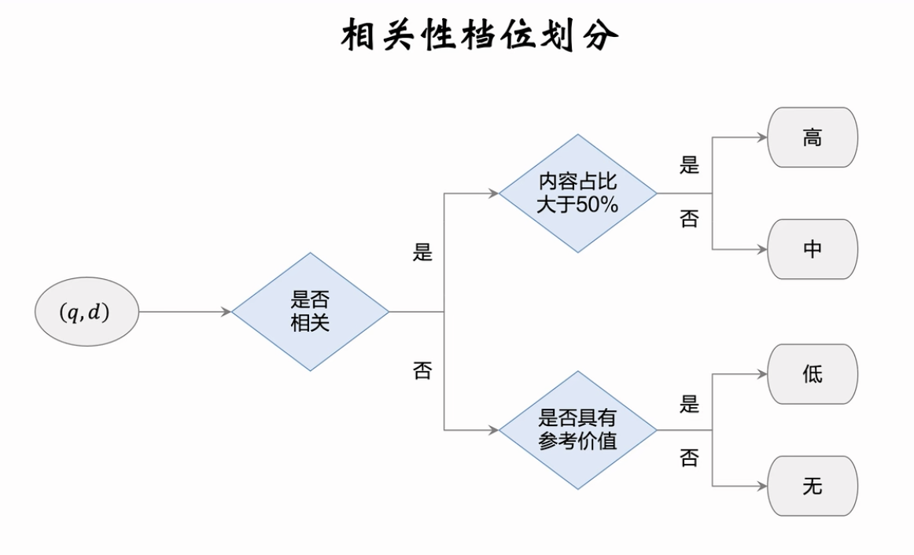
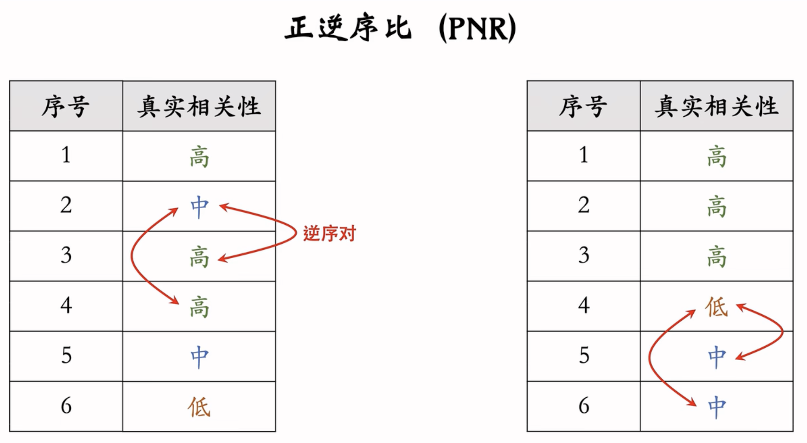

定义与分档
工业界做搜索相关性的流程一般为:
- 指定相关性标注规则 -> 人工标注数据 -> 做监督学习训练模型 -> 部署到线上做推理
数据很关键, 很多算法层面的优化对比与更多的数据支持, 数据支持会非常容易地使指标涨很多.
数据
指定标注规则
- 一般是搜索产品和搜索算法团队来制定相关性标注的规则.
- 人为将(q, d) 之间的相关性划分为4个或5个档位.
- 相关性分档规则很重要! 如果标注规则有漏洞, 迟早有一天需要把标注规则推倒重来, 那么之前积累的数据就都得丢弃, 非常耗费时间和财力.

标注数据
产品和算法团队监督和指导标注团队的工作, 累积数十万数百万的(q, d)数据. 一旦标注过程中发现新问题且按已有规则无法解决, 那么产品和算法团队就需要添加新的规则.
标注的流程:
- 算法团队抽取待标注样本: 从搜索日志中随机抽取n条查询词. 有高频查询词, 也有中,低频查询词
- 给定其中的一个q, 从搜索结果中抽取k篇文档, 组成二元组(q,d1),(q,d2)...(q,dk). 尽可能使4个相关性档位样本数量维持平衡.
- 不可以直接取搜索结果页排名topk的文档, 否则高档位文档过多, 低挡位文档过少.
- 由产品和算法团队监督标注过程和验收结果. 遇到难以界定的档位的(q,d), 需要产品和算法团队做界定和解释.
- 一条样本至少两人标注, 两人标注的结果需要有一致性, 标注不一致或者小于某个阈值会直接丢弃.
- 产品团队会对标注进行抽查, 将产品团队的标注记为ground truth, 判断标注团队的准确率, 只有大于某个阈值才被接受.
- (实用经验)抽查的时候可以事先"埋雷", 产品团队预先标注一批数据, 然后将数据埋到标注数据中. 标注团队工作结束需要抽查的时候, 只需要看埋的雷的准确率即可.
意义: 只要标注质量合格, 那么标注的数据越多, 那么训练出的模型效果就越好(好的非常明显).
相关性相关问题
需求匹配
相关性是指d能否满足q的需求或是q提出的问题, 与文本是否匹配并无关系.(需求匹配, 而非字面匹配)
- 文本不匹配但是相关: q=谁掌握芯片制造的尖端技术, d=全球最先进的光刻机都由荷兰ASML公司制造...
- 文本匹配但是不相关: q=巴伦西亚旅游, d=我去巴伦西亚旅游, 吃到了最好最正宗的西班牙海鲜饭, 回来研究了一番, 这个视频给大家介绍西班牙海鲜饭的做法...
多意图
查询词可能有多意图, 文档d只需要命中一种意图就算相关.
比如: q=黑寡妇
那么d里面无论是漫威电影里的黑寡妇, 又或者是蜘蛛, 无论用户的意图是什么, 这些都算相关.
上位词和下位词
搜索上位词出现下位词,判定相关; 搜索下位词出现上位词, 判定不相关.
比如你搜NLP相关模型出现bert, 算搜上位词出现下位词, 判定相关;
搜索bert结果出现NLP相关模型的泛答, 算搜下位词出现上位词, 判定不相关.
丢词判定
判定大前提: 丢词之后看q的主要需求是否发生变化
- 丢掉核心词, 判定不相关(主要需求发生变化, 例如: q=情人节
餐厅, d=情人节礼物)
- 丢重要限定词, 判定不相关(主要需求发生变化, 例如: q=
初中物理考点, d=高中物理考点)
- 丢不重要限定词, 判定相关(主需求不变, 例如: q=
精彩好莱坞电影, d=好莱坞电影top10)
相关性标注应该仅考虑相关性
相关性标注过程中应该仅考虑相关性, 而不应该考虑内容质量和时效性等其他因素.
举个例子:
- q=什么药物可以治疗新管, d=一种虚假广告, 声称某种草药可以治疗新管, 并用某种不合常理的逻辑讲解了原理.
- q=上海落户政策, d=一篇过时的文章, 介绍了2015年上海落户的政策.
对于1这种算是内容质量低, 但是相关性上并没有问题, 因此q和d依然算具有相关性.
对于2这种算是时效性低, 但是相关性上也没有问题, 因此q和d算相关.
总而言之, 相关性训练的数据应该只关注相关性, 一旦考虑了其他因素, 模型就得去学习其他繁杂的因素, 关注点就不再是纯相关性了, 效果可能就不好了.
评价指标
- pointwise: 单独评价每一个(q,d)二元组, 判断预测的相关性分数和真实标签的相似度.
- pairwise: 对比(q, d1)和(q, d2), 判断两者的顺序是否正确.
- listwise: 对比(q, d1), (q, d2)...(q, dk), 判断前k的整体关系正确程度.
流程:
离线
- 实现标注数据, 划分训练集和测试集.
- 离线部分: 完成训练之后, 计算测试集的AUC和PNR.
线上评测
- 一个搜索session中, 对于用户搜索q, 搜索页面会出现文档d1, d2...dk.
- 我们首先从搜索记录中抽一批session, 其中覆盖高中低频的查询词.
- 对每个session, 我们取排序最高的k篇文档(k的取值依据用户平均浏览深度, 比如20).
- 由于高频查询词靠前文档指标过高, 我们就需要扩大k值(比如取k=40).
- 与之对比, 低频查询词就可以设置较小k, 比如k=20.
- 由于高频查询词靠前文档指标过高, 我们就需要扩大k值(比如取k=40).
- 人工标注相关性分数, y1,y2...yk.(因为结果是线上实时结果, 所以只能等评估的时候人工标注; 每次评估都要标注, 所以一般作为月度评估.)
- 对于每一个session我们都会有一个DCG分数, 作为此session的评价指标.
- 对所有session的DCG取平均, 就可以来评价线上相关性模型.
pointwise(AUC)
- 测试集相关性转化为二分类问题. 高,中两档合并记为标签1;低,无两档合并记为标签0.
- 相关性模型输出预测值
$ p \in [0, 1] $.
- 用AUC对模型进行评价.
传统机器学习内容, 不多看了
pairwise(PNR)
- 依据模型估计的相关性分数p对文档排序, 由于估计会出错, 所以真实相关性不一定降序.
- 假设我们有n个打分, 那么就存在
$ C_n^2 $个pair.
- 记算其中正序对数量和逆序对数量,
$ PNR = \frac{正序对数量}{逆序对数量} $.
存在问题: 即使PNR相同, 其内部排序其实还是可能存在问题. 比如下图中, 虽然PNR相同, 但是右边的预测结果就比左边要好, 这是因为右边结果中, 高相关文档排在了前面. 使用Listwise的判定指标也可以达到相似目的.

listwise(DCG)
- 依据模型估计的相关性分数p对文档降序排序, 把文档记作
$ d_1, d_2, ...d_n $.
- 假设按这个排序之后, 真实相关性分数为
$ y_1, y_2, ...y_n $.
- 理想情况: y1>=y2>=y3...>=yn, 即预估顺序和真实顺序相同, 此时listwise指标最大化.(pairwise指标也是最大化)
- 假如出现逆序对, pairwise和listwise的指标都会下降; 假如已经存在逆序对, 逆序对出现前后对pairwise无影响, 但是对listwise有影响.
CG(Cumulative Gain)
\[ CG@k = \sum_{i=1}^k y_i \]
CG最大化的情况即相关性最高的k篇文档排在前面即可, 需注意交换前k篇文档的顺序不会改变CG, 这也是CG的缺点.
缺点: CG没能关注前k篇文档的内部顺序.
DCG(Discounted Cumulative Gain)
DCG相对CG的优化: 前面的文档更容易被用户看到, 所以它们理应更重要, 所以它们权重应该更大.
\[ DCG@k = \sum_{i=1}^k \frac{y_i}{log_2(i+1)} \]
DCG的最优解必须保证前k篇文档在前面的同时, 前k篇文档内部顺序也得正确, 一旦前k出现逆序对, DCG指标都会下降.
NDCG
\[ NDCG@k = \frac{DCG@k}{IDCG@k} \]
其中IDCG为最优DCG的取值, 因此NDCG永远在0和1之间.
看起来做了归一化还不错, 但是却存在问题:
比如:
- 召回返回一批相关性极低的文档, 但是此时排序做的好, 因此NDCG可以很高, 比如0.95.
- 可是即使NDCG很好, 文档的相关性却很差, 即使说这其实是召回导致的结果, 并不是排序的问题.
- 与之对比, DCG的指标就可以反映出这个问题, 一旦全局相关性差, 通过DCG指标就可以看出, 而NDCG就看不到这种信息.
因此: DCG可以看到最终结果的文档相关性; 而NDCG只能看到排序部分的结果有多趋近于最优排序, 即仅关注排序效果.
文本匹配
背景以及搜索引擎链路
在深度学习技术成熟以前, 当时搜索引擎只能用文本匹配来做相关性.
无论召回还是排序, 都需要计算查询词和文档的相关性.
- 召回
- 打分量: 数万
- 模型: 文本匹配分 + 线性模型 或者 双塔bert(推理代价不大)
- 打分量: 数万
- 粗排
- 打分量: 数千
- 模型: 双塔bert或者单塔交叉bert
- 打分量: 数千
- 精排
- 打分量: 数百
- 模型: 单塔交叉bert
传统搜索引擎有几十种人工设计的文本匹配分数, 作为线性模型或者树的特征, 然后使用模型预测相关性.
词匹配分数(词频匹配)
tf-idf
- tf->term frequency(词频): 即词t在文档d中出现的次数.
存在问题1: 文档越长, tf越大, 这并不合理.
问题1解决方案: 取文档长度加权即可.
存在问题2: 词频加权一视同仁, 比如一个文档中出现"the cat", "the"和"cat"会被同等对待. 然而"the"出现的频率非常高, 几乎所有文档里面都会出现, 与之对比, "cat"包含的信息量远大于"the". 所以理应给"cat"更高的权重.
问题2解决方案: 同时考虑idf
- idf->inverse document frequency
idf只取决于文档数据集
\[ idf_t = log\frac{N}{df_t} \]
其中df_t为词t在多少文档里面出现过.
对于人工智能论文, "深度学习"的idf就很小, 因为人工智能论文会高强度出现"深度学习";
与之对比, 维基百科里"深度学习"的idf就很大.
idf衡量term重要性, idf越大就代表term越重要.
- tf-idf
两者结合就是tf-idf, 其形式有很多种, 比如
\[ TFIDF(q,d) = \sum_{t \in Q} \frac{tf_{t,d}}{l_d} \cdot idf_t \]
又或者
\[ TFIDF(q,d) = \sum_{t \in Q} log(1+tf_{t,d}) \cdot idf_t \]
BM25(Okapi Best Match 25)
tf-idf的一个变体.
\[ BM25 = \sum_{t \in Q} \frac{tf_{t,d} \cdot (k+1)}{tf_{t,d} + k \cdot (1 - b + b \cdot \frac{l_d}{mean(l_d)})} \cdot ln(1 + \frac{N-df_t+0.5}{df_t+0.5}) \]
其中l_d为文档长度, k,b为参数, 通常 $ k \in [1.2, 2] $, b=0.75.
缺点
tf-idf和BM25都隐含了词袋模型的假设, 即只考虑词频而不考虑上下文和词顺序.
比如"黑/衬衫/白/裤子"和"白/裤子/黑/衬衫"就是完全一样的分数.
LSA和LDA也类似.
而最新的深度学习模型, 从久远的RNN到目前的BERT,GPT, 效果都远优于词袋模型.
词距分数(term proximity)
举例: Q = 亚马逊/雨林
d = 我在亚马逊买了一本书, 介绍了东南亚热带雨林的...
虽然Q和d文本匹配, 但是两者并不相关(q的需求没有得到满足)
同样, 如果使用tf-idf或者BM25, 这些都会导致错误的结论.
解决方案
要避免这类错误, 就需要用到词距.
词距: q中两个词在文档d中出现的位置间隔了多少个词; 词距越小, 则q和d越相关, 否则越不相关.
OkaTP
- 记词t在文档d中出现的位置集合为O(t,d).
- 假设t出现在文档d的27,84,98几个位置, 则O(t,d) = {27,84,98}. 可以发现|O(t,d)| = tf(t,d)
词距计算如下:
\[ tp(t,t',d) = \sum_{o \in O(t,d)}\sum_{o' \in O(t', d)} \frac{1}{(o-o')^2} \]
查询词在文档中出现次数越多, 相距越近, 词句分tp(t,t',d)就越高
OkaTP:
\[ OkaTP = \sum_{t,t' \in Q, t \neq t'} \frac{tp_{t,t',d} \cdot (k+1)}{tp_{t,t',d} + k \cdot (1 - b + b \cdot \frac{l_d}{mean(l_d)})} \cdot min(idf_t, idf_{t'}) \]
OkaTP同时考虑了词频和词距, 是一个很好的匹配分数.
总结
tf-idf, BM25等分数依据词频, tp等分数除了词频还考虑了词距, 是一步一步演变过来的, 但是依然远远比不上能够解决语义问题的深度学习模型.
不过在召回的海选阶段, 文本匹配因为计算快, 可能还是可以有一定的使用.
BERT模型
TODO